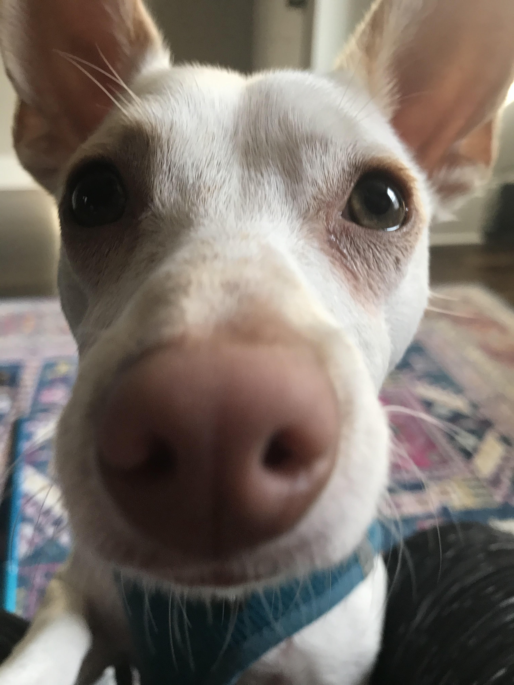

library(tidyverse)
library(foreach)
library(doParallel)
species_names <- as.character(unique(iris$Species))
n_cores <- parallel::detectCores()
cluster <- parallel::makeCluster(n_cores-1)
doParallel::registerDoParallel(cluster)
foreach (i = seq_along(species_names), .combine = 'c') %dopar% {
system.time(rmarkdown::render("Report-Layout.rmd",
params = list(species = species_names[i]),
output_file = paste0("Report for ", species_names[i])))
}Recently, I have been working on a project to find alternate methods for creating PDF score reports for assessments that have typically been made using Microsoft Access. As someone who has literally never had a fun time working in Access, I was thrilled to be assigned to this project, and was then quickly humbled by the task at hand.
It has been easy enough to create parameterized HTML reports for a handful of internal users, but when the audience is external at a scale of thousands of reports, the processing time in generating the reports quickly becomes a major consideration in operationalizing the solution.
After tweaking code, unsuccessfully experimenting with cache = TRUE, and several cups of coffee ☕, I finally found a reasonable solution using the foreach and doParallel packages as suggested by a colleague, in reference to an email from 2018 from a different organization dealing with the same exact dilemma.
The first thing I learned that really helped understand why my PDF reports were being compiled so slowly is that R is single threaded by default. This is a new concept to me so I’m not going to even pretend to fully understand it, but I found this resource to be super helpful.
For this quick demo, we will need to make an RMarkdown file and an R file.
RMarkdown File: Report-Layout.rmd
The RMarkdown file could look something like this:
---
title: "Iris Demo"
output: pdf_document
params:
species: ""
---
```{r}
knitr::opts_chunk$set(
echo = FALSE,
message = FALSE,
warning = FALSE
)
library(tidyverse)
df <- iris %>%
filter(Species == params$species)
```
Report for the species: params$species
```{r}
df %>%
filter(Species == "setosa") %>%
ggplot(aes(Sepal.Width))+
geom_histogram() +
ggtitle(paste0("Distribution of Sepal.Length for ", params$species))
```The parameters for species will be passed through to generate a report for each species in iris.
When creating thousands of reports, this process takes quite a while, and luckily we can speed it up using foreach and doParallel.
R Script: Create Reports
The R script could look something like this:
To generate reports, all we need to do is run the Create Reports.r script, and we’ll have three reports generated in a matter of seconds. As we increase the volume of reports, the multi-core processing enabled by foreach / doParallel will significantly cut down on the processing time.
I had intended for this to be longer but really just want to put this out there, and maybe revisit some day with a Part 2. For now, Molly and me are going to hike around Wissahickon with Donut 🐶 🍩
